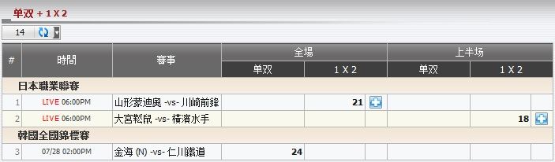
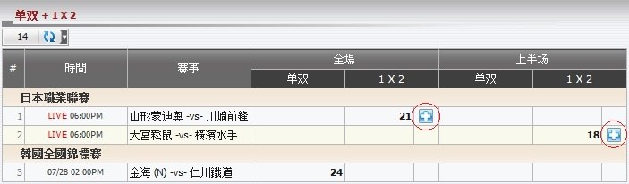
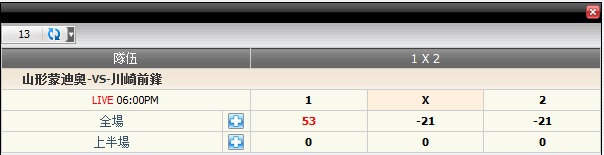
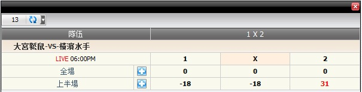

單雙 + 1 X 2
定義:
顯示基於注單佔成數的總代理輸贏, 投注類型之: 上半場及全場單雙, 1X2 (圖1.1)。

圖 1.1
- 對於日本職業聯賽, member1 投注兩場賽事 山形蒙迪奧 -vs- 川崎前鋒 和 大宮松鼠 -vs- 橫濱水手 細節如下:
- 第一投注: 投注額 = 70, 賠率 = 3.52, 投注類型: 1x2, 全場, 選擇: 全场.1, 總代理佔成 = 30% --> 總代理基於佔成數所得 = 70*30% = 21
- 第二投注: 投注額 = 60, 賠率= 2.7, 投注類型: 1x2, 上半場, 選擇: 上半场.2, 總代理佔成 = 30% --> 總代理基於佔成數所得 = 60*30% = 18
- 對於 韓國全國錦標賽, member1 投注於賽事 金海 (中) -vs- 仁川鐵道, 細節如下:
- 第一投注: 投注額 = 80, 賠率 = 0.96, 投注類型: 單雙, 全場, 投注 單, 總代理佔成 = 30% --> 總代理基於佔成數所得 = 80*30% = 24
預測功能
此功能幫助總代理根據主隊比分, 客隊比分演算輸/贏數額。要查看輸贏預測, 點擊 "+" 標記

圖 1.2
-
全場 1x2: 在這個例子中, member1 投注於賽事 山形蒙迪奧 -vs- 川崎前鋒, 投注額 = 70, 選擇: 全场.1, 賠率 = 3.52, 投注類型 = 全場 1x2, 總代理佔成 = 30%.

圖 1.3
這是 1x2 的全場結果預測及詳情如下:
- 1: 53 --> 若主隊贏, 那麼總代理將會輸: 70*30%*(3.52 - 1) = 53.
- x: 21 --> 若結果為和局, 那麼總代理將會贏: 70*30% = 21.
- 2: 21 --> 若客隊贏,那麼總代理將會贏: 70*30% = 21.
-
上半場 1x2: 在這個例子中, member1 投注於賽事 大宮松鼠 -vs- 橫濱水手, 投注額 = 60: 上半场.2, 賠率 = 2.7, 投注類型 = 上半場 1x2, 總代理佔成 = 30%。

圖 1.4
这是 1x2 的上半場结果预测及详情如下:
- 1: 18 --> 若主隊贏, 那麼總代理將會贏: 60*30% = 18.
- x: 18 --> 若結果為和局, 那麼總代理將會贏: 60*30% = 18.
- 2: 31 --> 若客隊贏,那麼總代理將會輸: 60*30%*(2.7 - 1) = 31.